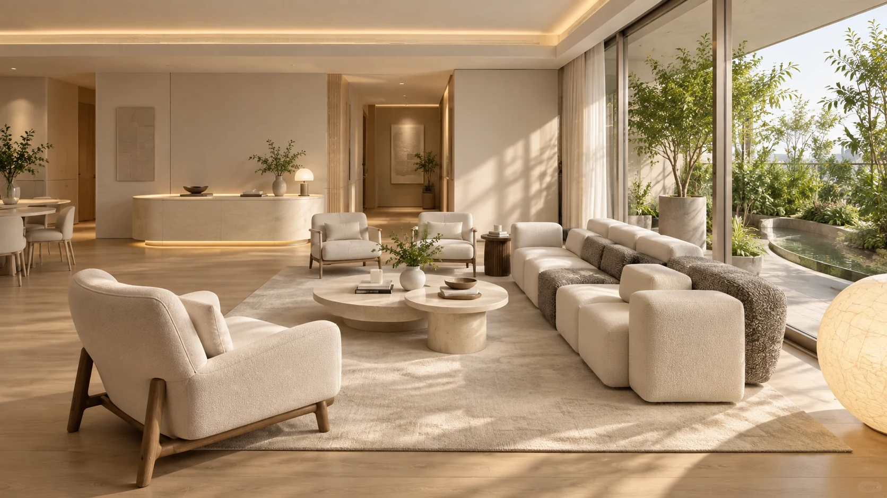
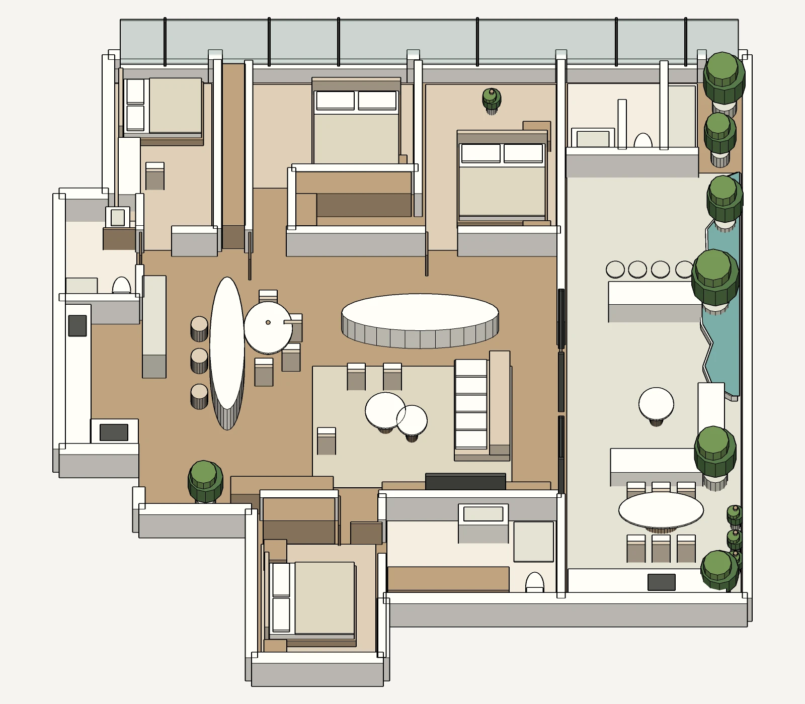
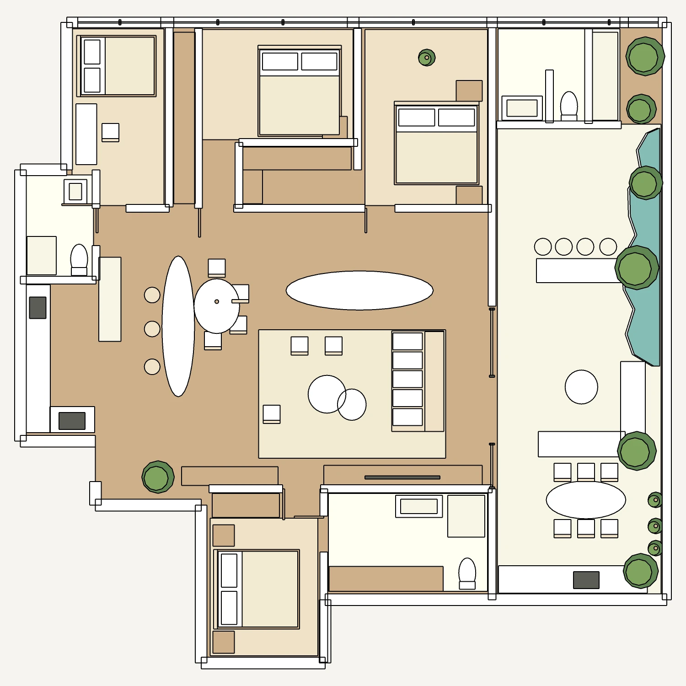

从户型图识别空间骨架
梳理入口、厨房、客餐厅、三间卧室与景观阳台，先确认公共与私密区域的关系。
住宅空间 / SketchUp × AI 影像 / 2026
从一张理想户型参考图出发，我先建立空间关系与动线，再把粗模转化为客厅效果、房间漫游和真实感视频。项目重点是让平面中的花园阳台、公共客厅与卧室关系可以被直接看见和体验。

梳理入口、厨房、客餐厅、三间卧室与景观阳台，先确认公共与私密区域的关系。
通过墙体、门洞、家具与绿化体块校准比例，让之后的视角都回到同一套空间关系。
以客厅为核心制作房间漫游和介绍视频，让观看者从平面理解走向空间感受。
SketchUp 模型
粗模保留户型的核心体量、门洞和家具关系。右侧景观阳台作为贯穿公共空间的自然界面，客厅、餐厨与卧室沿中央动线展开。


可交互体验
拖动画面观察空间，通过画面中的房间按钮或底部缩略图切换客厅、卧室与景观阳台。
支持鼠标、触控与全屏浏览在新页面打开 ↗
项目视频
镜头以客厅为主，保留沙发、圆形茶几、餐厨背景与景观阳台之间的空间联系，呈现温暖、真实的居住氛围。